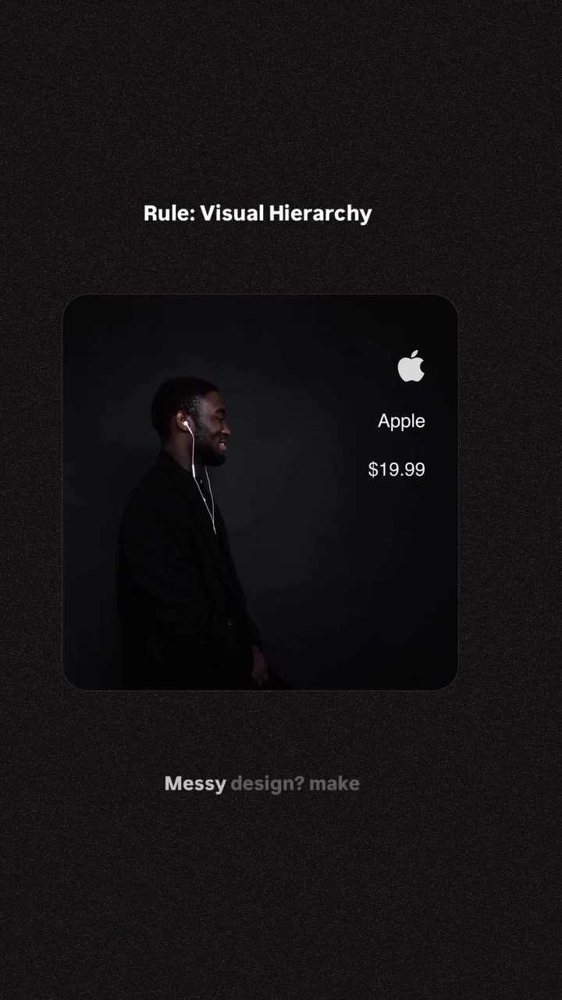
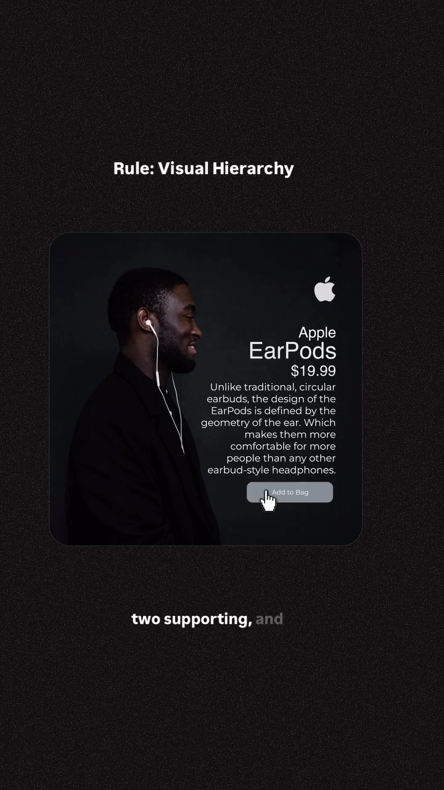
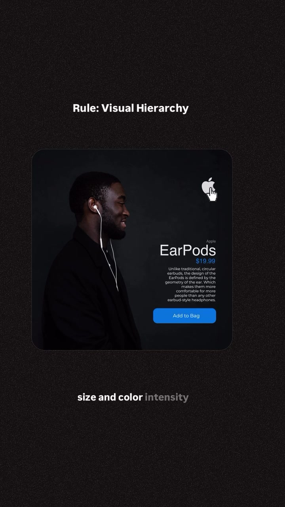

Design · Visual-Hierarchy
Visual Hierarchy: The "1 Hero, 2 Supporting, Rest Quiet" Design Law
The most common flaw in UI design, landing pages, and poster layouts is focal competition: when every element fights for equal visual attention (same type size, saturated colors, bold weights). This 10-second foundational rule establishes instant clarity: every composition must feature 1 primary Hero element, 2 Supporting elements, and keep all remaining elements visually quiet through calculated size reduction and muted color contrast.
Visual Reference Stills



The 3-Tier Hierarchy Formula
The anchor point where the human eye lands first. Created through dominant scale (display font size, large hero imagery), highest contrast, or boldest weight.
Medium scale elements providing essential secondary context (e.g., subtitle, primary CTA button, or hero metric badge). They complement the hero without challenging its visual dominance.
All metadata, secondary links, helper copy, captions, and micro-text must be deliberately muted using lower font size (12px–14px), lighter weights (400 regular), and low-contrast neutral shades (e.g. #94a3b8).
Practical Application in Web & UI Design
- SaaS Hero Section: 1 Hero Headline (bold 56px white) + 2 Supporting (sub-headline 18px gray + 1 primary CTA button) + Quiet (navbar links, trust badges in 50% opacity).
- Pricing Card: 1 Hero ($/month price) + 2 Supporting (Plan Name + "Get Started" button) + Quiet (feature checklist items).
- Bento Grid Item: 1 Hero (visual graph/illustration) + 2 Supporting (Card Title + Tag) + Quiet (descriptive paragraph).